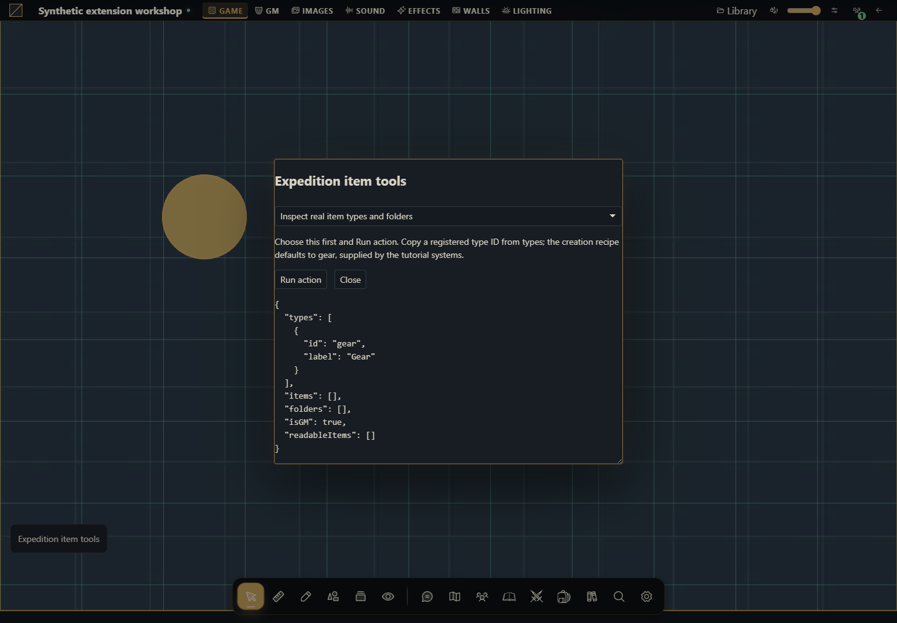

How to build item and inventory tools
Create, organize, duplicate, share and edit original items with native revisions and permissions.


The project you will build
Build an Expedition item tools module. First discover this campaign's registered types, create a Survey kit and a spare, then organize and grant access. The core has no generic actor inventory/equip transaction: these recipes manage campaign item documents; a system must own inventory rules and relationships. Every available item mutation is demonstrated below.
Target host: Gravewright 0.3.0. Actions run only when you click Run action, using the signed-in account. The demonstration panel is English. Each recipe specifies inputs and an observable result.
1. Create the files
Create a folder named items. Save the complete files below as UTF-8, or download the project. manifest.json belongs at the root. No npm dependencies or JavaScript build is required.
items/
manifest.json
main.mjs
recipes.mjs
styles.css
LICENSE.txtUse a disposable campaign with an installed system declaring an item type, such as gear in the compendium-system tutorial. Create/duplicate/permissions/folder/deletion require GM; an item owner may update permitted data. The workbench uses concrete UUID inputs copied from its authorized outputs.
2. Package, install and activate
From the project folder, run in PowerShell:
python -m json.tool manifest.json
python -m zipfile -c ../items-1.0.0.zip manifest.json main.mjs recipes.mjs styles.css LICENSE.txt
python -m zipfile -l ../items-1.0.0.zipOn Linux/macOS, replace python with python3 in the same commands. The archive listing must show manifest.json at its root. As installation owner, open Inside → Modules → Install module → Install from ZIP, select the ZIP and click Install. As GM, open the campaign, select its Gravewright button → Extensions and Activate version 1.0.0 of Expedition item tools. Close that menu and click Expedition item tools. See your first module for screen-by-screen instructions.
The package stays inactive until selected for the table. Test one demonstration extension at a time because their launchers share a position. For changed bytes, increment version to 1.0.1, build another ZIP, install and activate that version; do not edit installed files.
3. Run each recipe
Inspect real item types and folders
Choose this first and Run action. Copy a registered type ID from types; the creation recipe defaults to gear, supplied by the tutorial systems.
async ({api,signal}) => {
return {...await api.items.state({}, {signal}),readableItems:await api.items.list({}, {signal})};
}Expected result: The authorized items, folder tree, registered types and isGM flag. A listing-only row has no readable body.
How to verify: Compare the same state as GM and a read-only player; no hidden item data may appear.
Create and duplicate an expedition kit
Enter a real registered item type, then Run action once. Copy folderId, itemId and duplicateId from the result for the next recipes.
async ({api,signal},values) => {
const state = await api.items.state({}, {signal});
if (!state.types.some(type => type.id === values.type)) throw new Error("Choose an item type registered by this campaign system");
const folder = await api.items.createFolder({name:"Expedition supplies",color:"#6498cc",parentId:null}, {signal});
const created = await api.items.create({name:"Survey kit",type:values.type,folderId:folder.id,data:{quantity:1,description:"An original compass and a blank notebook."},permissions:{default:"none"}}, {signal});
const duplicate = await api.items.duplicate({id:created.id,version:created.item.version,name:"Spare survey kit"}, {signal});
return {folderId:folder.id,itemId:created.id,duplicateId:duplicate.id};
}Expected result: A folder and two separate items containing original system-owned JSON. Each explicit run creates another set.
How to verify: Open Items. Edit one kit and verify the duplicate remains independent.
Edit and move the kit
Use itemId, set a name/quantity and paste the created folderId, or leave the destination blank to move to root.
async ({api,signal},values) => {
const current = await api.items.get(values.id, {}, {signal});
return api.items.update({id:current.id,version:current.version,name:values.name,folderId:values.folderId || null,data:{...current.data,quantity:values.quantity}}, {signal});
}Expected result: The item changes atomically using its current version; unrelated data keys remain. Quantity is an example system field, not a core inventory rule.
How to verify: Verify the folder and quantity, then attempt a stale direct payload from a second session: the server must report conflict.
Grant reading or editing deliberately
As GM enter the kit UUID. Use read for the default grant or a real member UUID for a specific override; owner grants editing.
async ({api,signal},values) => {
const current = await api.items.get(values.id, {}, {signal});
const permissions = {...current.permissions,[values.userId || "default"]:values.level};
return api.items.setPermissions({id:current.id,version:current.version,permissions}, {signal});
}Expected result: Versioned permission changes. limited permits listing rather than opening; none removes the selected grant.
How to verify: Test read, limited and none in a player session. A reader cannot update data; a hidden button is not the security boundary.
Rename or reparent the folder
Paste folderId. A blank parent keeps this folder at root; another campaign folder UUID reparents it.
async ({api,signal},values) => {
return api.items.updateFolder({id:values.id,name:values.name,parentId:values.parentId || null,color:"#6498cc"}, {signal});
}Expected result: The folder is renamed/moved; the server rejects parent cycles and foreign-campaign IDs. Folder commands have no version field in this contract.
How to verify: Refresh Items, inspect the tree and try setting the folder as its own parent.
Delete the spare kit
Use only duplicateId from this demonstration. This action deletes that item and requires GM.
async ({api,signal},values) => {
const current = await api.items.get(values.id, {}, {signal});
return api.items.delete({id:current.id,version:current.version}, {signal});
}Expected result: The spare disappears; the original kit remains.
How to verify: Refresh the directory and confirm the original UUID still opens.
Remove the demonstration folder
Move items you want to retain to root with the update recipe before removing your test folder.
async ({api,signal},values) => {
return api.items.deleteFolder({id:values.id}, {signal});
}Expected result: The selected folder is removed through the native service.
How to verify: Refresh Items and inspect remaining items/folders instead of assuming client-side state stayed current.
4. Understand and adapt the complete files
main.mjs renders the launcher and form. recipes.mjs owns behavior: change the chosen recipe’s run function while keeping its signature. The form passes real number, boolean and File values, blocks overlapping requests and renders using textContent. It does not evaluate user-provided code. api, host, assets and storage belong to the mount; signal cancels work on deactivation. The modal stays open during pending work and is released when the mount aborts. Each business function remains responsible for revisions, permissions and transaction sequencing.
manifest.json
{
"id": "tutorial.items",
"name": "Expedition item tools",
"version": "1.0.0",
"sdk": {
"requires": ">=1.0.0 <2.0.0",
"tested": "1.0.0"
},
"entry": "main.mjs",
"description": "Create, organize, duplicate, share and edit original items with native revisions and permissions.",
"author": "Gravewright documentation",
"license": "MIT"
}main.mjs
import {recipes} from './recipes.mjs';
export default {
start({styles}) { styles.use('styles.css'); },
register({register}) {
register("table.interface", ({root,api,host,assets,storage,context,events,viewport,signal,onDispose}) => {
const doc=root.ownerDocument;
const button=doc.createElement('button');
button.type='button';button.className='tutorial-launcher';
button.textContent="Expedition item tools";
root.append(button);
for(const type of ['pointerdown','mousedown'])button.addEventListener(type,event=>event.stopPropagation(),{signal});
let modal,pending=false;
button.addEventListener('click',event=>{
event.stopPropagation();
if(modal?.isConnected) { modal.focus();return; }
const panel=doc.createElement('section');
panel.className="tutorial-workbench-items";
panel.setAttribute('role','dialog');panel.setAttribute('aria-modal','true');
panel.setAttribute('aria-label',button.textContent);panel.tabIndex=-1;
const title=doc.createElement('h2');title.textContent=button.textContent;panel.append(title);
const choose=doc.createElement('select');choose.setAttribute('aria-label','Action');
for(const recipe of recipes) {
const option=doc.createElement('option');option.value=recipe.id;option.textContent=recipe.label;choose.append(option);
}
const form=doc.createElement('form'),fields=doc.createElement('div');
const description=doc.createElement('p');
const run=doc.createElement('button');run.type='submit';run.textContent='Run action';
const close=doc.createElement('button');close.type='button';close.textContent='Close';
const output=doc.createElement('pre');output.setAttribute('role','status');output.setAttribute('aria-live','polite');
form.append(description,fields,run,close,output);panel.append(choose,form);
function renderFields(){
const recipe=recipes.find(item=>item.id===choose.value);fields.replaceChildren();
description.textContent=recipe.description;
for(const field of recipe.fields||[]) {
const label=doc.createElement('label');label.textContent=field.label;
const input=doc.createElement('input');input.name=field.name;input.type=field.type||'text';
if(field.type==='number')input.step=String(field.step??'any');
if(field.type==='checkbox')input.checked=!!field.value;
else if(field.type!=='file')input.value=String(field.value??'');
input.required=!!field.required;
if(field.accept)input.accept=field.accept;
label.append(input);fields.append(label);
}
output.textContent='';
}
choose.addEventListener('change',renderFields,{signal});renderFields();
form.addEventListener('submit',async event=>{
event.preventDefault();if(pending)return;
const recipe=recipes.find(item=>item.id===choose.value),values={};
for(const input of fields.querySelectorAll('input')) {
values[input.name]=input.type==='file'?input.files[0]:input.type==='checkbox'?input.checked:input.type==='number'?Number(input.value):input.value;
}
pending=true;choose.disabled=true;run.disabled=true;close.disabled=true;
for(const input of fields.querySelectorAll('input'))input.disabled=true;
output.textContent='Running…';
try {
const value=await recipe.run({api,host,assets,storage,context,events,viewport,signal,onDispose},values);
if(!signal.aborted)output.textContent=typeof value==='string'?value:JSON.stringify(value??null,null,2);
} catch(error) {
if(!signal.aborted)output.textContent=String(error.code||error.message||'unavailable');
} finally {
pending=false;
if(!signal.aborted){choose.disabled=false;run.disabled=false;close.disabled=false;for(const input of fields.querySelectorAll('input'))input.disabled=false;}
}
},{signal});
close.addEventListener('click',()=>void modal.close(),{signal});
modal=api.ui.openModal(panel,{canClose:()=>!pending||signal.aborted});
},{signal});
onDispose(()=>{button.remove();if(modal)void modal.close();});
});
},
stop() {}
};recipes.mjs
export const recipes=[
{
id:"inspect",
label:"Inspect real item types and folders",
description:"Choose this first and Run action. Copy a registered type ID from types; the creation recipe defaults to gear, supplied by the tutorial systems.",
fields:[],
run:async ({api,signal}) => {
return {...await api.items.state({}, {signal}),readableItems:await api.items.list({}, {signal})};
}
},
{
id:"create-kit",
label:"Create and duplicate an expedition kit",
description:"Enter a real registered item type, then Run action once. Copy folderId, itemId and duplicateId from the result for the next recipes.",
fields:[
{
"name": "type",
"label": "Registered item type",
"value": "gear",
"type": "text",
"required": true
}
],
run:async ({api,signal},values) => {
const state = await api.items.state({}, {signal});
if (!state.types.some(type => type.id === values.type)) throw new Error("Choose an item type registered by this campaign system");
const folder = await api.items.createFolder({name:"Expedition supplies",color:"#6498cc",parentId:null}, {signal});
const created = await api.items.create({name:"Survey kit",type:values.type,folderId:folder.id,data:{quantity:1,description:"An original compass and a blank notebook."},permissions:{default:"none"}}, {signal});
const duplicate = await api.items.duplicate({id:created.id,version:created.item.version,name:"Spare survey kit"}, {signal});
return {folderId:folder.id,itemId:created.id,duplicateId:duplicate.id};
}
},
{
id:"update-kit",
label:"Edit and move the kit",
description:"Use itemId, set a name/quantity and paste the created folderId, or leave the destination blank to move to root.",
fields:[
{
"name": "id",
"label": "Item UUID",
"value": "",
"type": "text",
"required": true
},
{
"name": "name",
"label": "New name",
"value": "Prepared survey kit",
"type": "text",
"required": true
},
{
"name": "quantity",
"label": "Quantity",
"value": 2,
"type": "number",
"required": true
},
{
"name": "folderId",
"label": "Destination folder UUID, blank for root",
"value": "",
"type": "text",
"required": false
}
],
run:async ({api,signal},values) => {
const current = await api.items.get(values.id, {}, {signal});
return api.items.update({id:current.id,version:current.version,name:values.name,folderId:values.folderId || null,data:{...current.data,quantity:values.quantity}}, {signal});
}
},
{
id:"permissions",
label:"Grant reading or editing deliberately",
description:"As GM enter the kit UUID. Use read for the default grant or a real member UUID for a specific override; owner grants editing.",
fields:[
{
"name": "id",
"label": "Item UUID",
"value": "",
"type": "text",
"required": true
},
{
"name": "level",
"label": "Access: none, limited, read or owner",
"value": "read",
"type": "text",
"required": true
},
{
"name": "userId",
"label": "Member UUID, blank for default",
"value": "",
"type": "text",
"required": false
}
],
run:async ({api,signal},values) => {
const current = await api.items.get(values.id, {}, {signal});
const permissions = {...current.permissions,[values.userId || "default"]:values.level};
return api.items.setPermissions({id:current.id,version:current.version,permissions}, {signal});
}
},
{
id:"folder",
label:"Rename or reparent the folder",
description:"Paste folderId. A blank parent keeps this folder at root; another campaign folder UUID reparents it.",
fields:[
{
"name": "id",
"label": "Folder UUID",
"value": "",
"type": "text",
"required": true
},
{
"name": "name",
"label": "Folder name",
"value": "Prepared supplies",
"type": "text",
"required": true
},
{
"name": "parentId",
"label": "Parent folder UUID, blank for root",
"value": "",
"type": "text",
"required": false
}
],
run:async ({api,signal},values) => {
return api.items.updateFolder({id:values.id,name:values.name,parentId:values.parentId || null,color:"#6498cc"}, {signal});
}
},
{
id:"delete-item",
label:"Delete the spare kit",
description:"Use only duplicateId from this demonstration. This action deletes that item and requires GM.",
fields:[
{
"name": "id",
"label": "Disposable item UUID",
"value": "",
"type": "text",
"required": true
}
],
run:async ({api,signal},values) => {
const current = await api.items.get(values.id, {}, {signal});
return api.items.delete({id:current.id,version:current.version}, {signal});
}
},
{
id:"delete-folder",
label:"Remove the demonstration folder",
description:"Move items you want to retain to root with the update recipe before removing your test folder.",
fields:[
{
"name": "id",
"label": "Disposable folder UUID",
"value": "",
"type": "text",
"required": true
}
],
run:async ({api,signal},values) => {
return api.items.deleteFolder({id:values.id}, {signal});
}
}
];styles.css
.gw-module-root[data-module-id="tutorial.items"] .tutorial-launcher { position: fixed; left: 16px; bottom: 112px; z-index: 10; padding: var(--space-3); border: 1px solid var(--border); border-radius: var(--radius-md); background: var(--surface); color: var(--text); font-size: 14px; pointer-events: auto; max-width: min(440px, calc(100vw - 32px)); white-space: normal; }
.tutorial-workbench-items { width: min(640px, calc(100vw - 48px)); padding: var(--space-5); font-size: 14px; }
.tutorial-workbench-items label { display: block; margin: var(--space-3) 0; }
.tutorial-workbench-items input, .tutorial-workbench-items select { display: block; width: 100%; margin-top: var(--space-2); }
.tutorial-workbench-items pre { max-height: 360px; max-width: 100%; overflow: auto; white-space: pre-wrap; overflow-wrap: anywhere; }
.tutorial-workbench-items button { margin-right: var(--space-3); }LICENSE.txt
MIT License
Copyright (c) 2026 Gravewright contributors
Permission is hereby granted, free of charge, to any person obtaining a copy
of this software and associated documentation files (the "Software"), to deal
in the Software without restriction, including without limitation the rights
to use, copy, modify, merge, publish, distribute, sublicense, and/or sell
copies of the Software, and to permit persons to whom the Software is
furnished to do so, subject to the following conditions:
The above copyright notice and this permission notice shall be included in all
copies or substantial portions of the Software.
THE SOFTWARE IS PROVIDED "AS IS", WITHOUT WARRANTY OF ANY KIND, EXPRESS OR
IMPLIED, INCLUDING BUT NOT LIMITED TO THE WARRANTIES OF MERCHANTABILITY,
FITNESS FOR A PARTICULAR PURPOSE AND NONINFRINGEMENT. IN NO EVENT SHALL THE
AUTHORS OR COPYRIGHT HOLDERS BE LIABLE FOR ANY CLAIM, DAMAGES OR OTHER
LIABILITY, WHETHER IN AN ACTION OF CONTRACT, TORT OR OTHERWISE, ARISING FROM,
OUT OF OR IN CONNECTION WITH THE SOFTWARE OR THE USE OR OTHER DEALINGS IN THE
SOFTWARE.5. Permissions, failures and final test
Run create once, edit the original, inspect its independent duplicate, move folders and test read/limited/none with a player. Repeating create intentionally creates another set. Writes receive fresh operation UUIDs from the SDK; do not blindly rerun a multi-step creation after a lost response, because its earlier steps may have committed. Inspect state and resume deliberately. Conflicts require reading and reviewing current state; this code never changes the revision on a rejected request. A listing-only item is not openable. Test foreign-campaign UUIDs, aborted mounts and empty type lists. Delete only test resources at the end.
How to use AI to extend this project
Extend tutorial-items for [system-owned fields]. Inspect items/services.py and frontend.json for this target release. Preserve registered types, data fields, version checks, permissions and folder containment. Do not invent actor-inventory, equip or transfer endpoints. Provide complete files and GM/player tests, including stale edits and repeated actions.